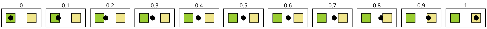

8 Animation Helpers
These functions are designed to work with the slide constructors in slideshow/play.
8.1 Pict Interpolations
函数
n : (real-in 0.0 1.0) p1 : pict? p2 : pict? combine : (pict? pict? . -> . pict?) = cc-superimpose
The combine argument determines how p1 and p2 are aligned for morphing. For example, if p1 and p2 both contain multiple lines of text with the same line height but different number of lines, then using ctl-superimpose would keep the ascent line in a fixed location relative to the top of the resulting pict as the rest of the shape morphs around it.
> (define (do-fade n) (fade-pict n (rectangle 30 30) (disk 30)))
> (apply ht-append 10 (for/list ([n (in-range 0 1.2 0.2)]) (vc-append (text (~r n #:precision 2)) (do-fade n))))
函数
(fade-around-pict n p1 make-p2) → pict?
n : (real-in 0.0 1.0) p1 : pict? make-p2 : (pict? . -> . pict?)
For example,
> (get-current-code-font-size (λ () 20))
> (define do-fade (lambda (n) (fade-around-pict n (code x) (lambda (g) (code (+ #,g 1))))))
> (apply ht-append 10 (for/list ([n (in-range 0 1.2 0.2)]) (vc-append (text (~r n #:precision 2)) (do-fade n))))
animates the wrapping of x with a (+ .... 1) form.
函数
(slide-pict base p p-from p-to n) → pict?
base : pict? p : pict? p-from : pict? p-to : pict? n : (real-in 0.0 1.0)
The p-from and p-to picts are typically laundered ghosts of p within base, but they can be any picts within base.
> (define (do-slide n) (define p1 (disk 30 #:color "plum")) (define p2 (disk 30 #:color "palegreen")) (define p3 (frame (inset (hc-append 30 p1 p2) 10))) (slide-pict p3 (disk 10) p1 p2 n))
> (apply ht-append 10 (for/list ([n (in-range 0 1.2 0.2)]) (vc-append (text (~r n #:precision 2)) (do-slide n))))

函数
(slide-pict/center base p p-from p-to n) → pict?
base : pict? p : pict? p-from : pict? p-to : pict? n : (real-in 0.0 1.0)
> (define (do-slide n) (define p1 (disk 30 #:color "plum")) (define p2 (disk 30 #:color "palegreen")) (define p3 (frame (inset (hc-append 30 p1 p2) 10))) (slide-pict/center p3 (disk 10) p1 p2 n))
> (apply ht-append 10 (for/list ([n (in-range 0 1.2 0.2)]) (vc-append (text (~r n #:precision 2)) (do-slide n))))
8.2 Merging Animations
8.3 Stretching and Squashing Time
函数
(fast-start n) → (real-in 0.0 1.0)
n : (real-in 0.0 1.0)
函数
n : (real-in 0.0 1.0)
函数
(fast-edges n) → (real-in 0.0 1.0)
n : (real-in 0.0 1.0)
函数
(fast-middle n) → (real-in 0.0 1.0)
n : (real-in 0.0 1.0)
Suppose that we have the following definitions for our examples:
> (define (do-slide n fast-proc) (define p1 (filled-rectangle 20 20 #:color "yellowgreen")) (define p2 (filled-rectangle 20 20 #:color "khaki")) (define p3 (frame (inset (hc-append 25 p1 p2) 10))) (slide-pict/center p3 (disk 10) p1 p2 ; note use of fast-proc (fast-proc n)))
> (define (run-animation fast-proc) (apply ht-append 10 (for/list ([n (in-range 0 1.09 0.1)]) (vc-append (text (~r n #:precision 2)) (do-slide n fast-proc)))))
A normal use of the animation looks like this:
> (run-animation (λ (n) n))
The fast-start mapping is convex, so that
(slide-pict base p p1 p2 (fast-start n))
appears to move quickly away from p1 and then slowly as it approaches p2, assuming that n increases uniformly.
Applying it to the animation above produces this:
> (run-animation fast-start)
The fast-end mapping is concave, so that
(slide-pict base p p1 p2 (fast-end n))
appears to move slowly away from p1 and then quickly as it approaches p2, assuming that n increases uniformly.
> (run-animation fast-end)
The fast-edges mapping is convex at first and concave at the end, so that
(slide-pict base p p1 p2 (fast-edges n))
appears to move quickly away from p1, then more slowly, and then quickly again near p2, assuming that n increases uniformly.
> (run-animation fast-edges) 
The fast-middle mapping is concave at first and convex at the end, so that
(slide-pict base p p1 p2 (fast-middle n))
> (run-animation fast-middle)
appears to move slowly away from p1, then more quickly, and then slowly again near p2, assuming that n increases uniformly.
函数
(split-phase n) →
(real-in 0.0 1.0) (real-in 0.0 1.0) n : (real-in 0.0 1.0)
Here is an example that shows how to apply split-phase to the animation from the examples for fast-start:
> (apply ht-append 10 (for/list ([n (in-range 0 1.09 0.1)]) (define-values (n1 n2) (split-phase n)) (vc-append (text (~r n #:precision 2)) (do-slide n1 (λ (n) n)) (do-slide n2 (λ (n) n)))))